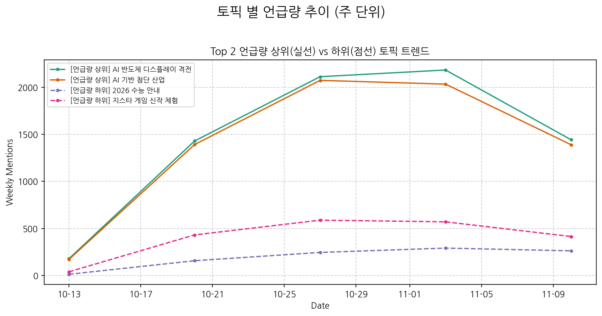
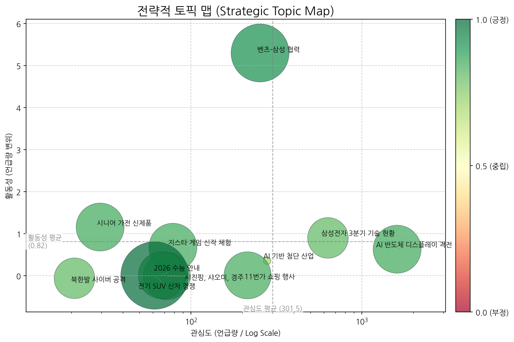
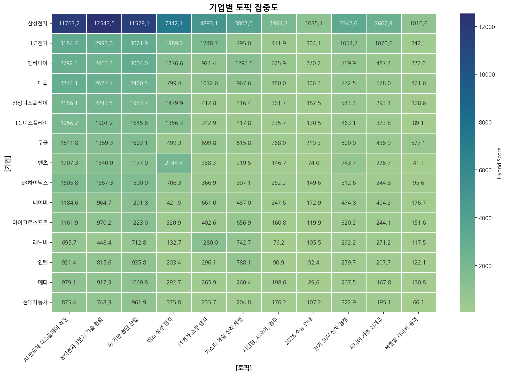
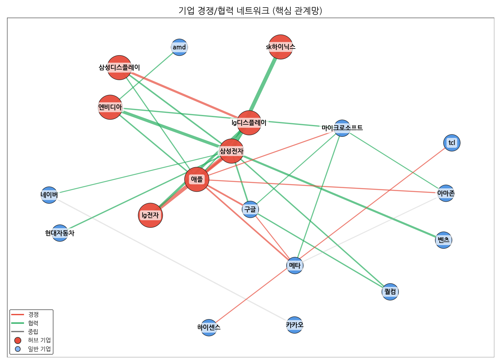
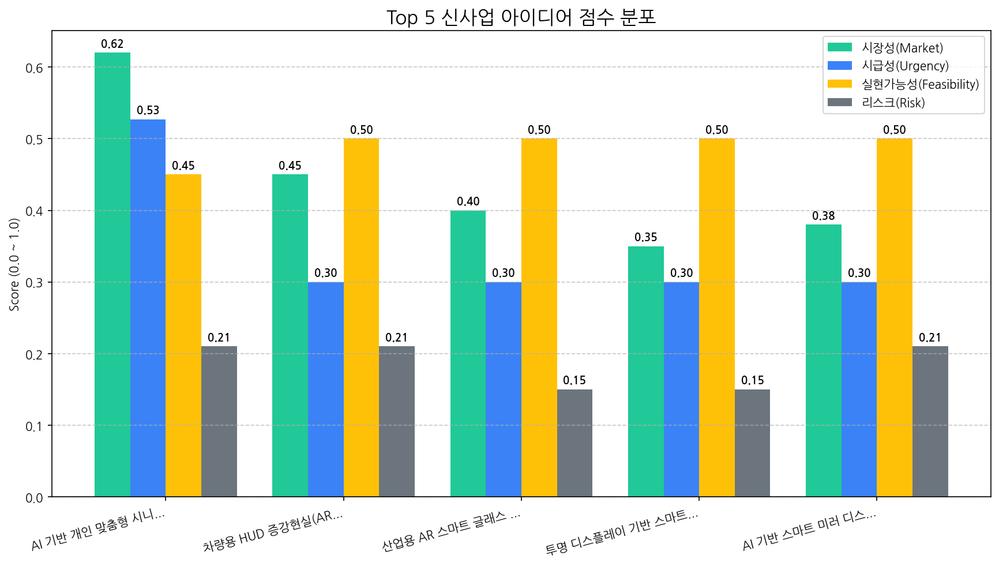

핵심 변화:
기회 요인:
위협 요인:
최우선 전략 방향 (차기 분기):
벤츠-삼성 협력 건을 중심으로 AI 반도체 디스플레이 기술 경쟁이 심화되는 가운데, 한국 기업들은 미국과 중국 시장에서 기술 우위를 바탕으로 매출 확대를 노리고 있으며, 삼성전자는 AI, 반도체, 디스플레이 기술을 기반으로 차세대 산업 경쟁력을 강화하고 있다.

| 토픽 | 요약 | 핵심 키워드 |
|---|---|---|
| AI 반도체 디스플레이 격전 | 한국 기업들이 AI, 반도체, OLED 디스플레이 기술을 핵심으로, 미국과 중국 시장에서 2024년, 2025년까지 새로운 사업 및 제품을 통해 경쟁하고, 매출 확대를 목표로 하는 상황을 보여준다. 특히 TV, 전기차 등의 산업에서 기술 기반 경쟁이 심화될 것으로 예상된다. | ai, 기술, oled |
| 삼성전자 3분기 기술 현황 | 삼성전자의 3분기 실적과 함께 AI, 반도체, 디스플레이, 배터리 등 핵심 기술 사업 및 갤럭시, TV 등 주요 제품의 현황, 그리고 미국, 중국 등 주요 시장과 관련된 내용을 다룹니다. 차세대 기술 및 장비, 로봇, XR 관련 투자 및 개발 동향도 포함됩니다. | ai, 반도체, oled |
| AI 기반 첨단 산업 | AI, 반도체, 디스플레이 등 첨단 기술 기반의 차세대 산업 동향 및 기업 개발 전략을 다룸. 특히 AI, OLED, LED 등의 핵심 기술과 관련된 미래 산업과 미국 시장과의 연계 가능성을 포함. | ai, 디스플레이, 기술 |
| 벤츠-삼성 협력 | 칼레니우스 벤츠 회장과 이재용 삼성전자 회장의 만남을 통해, 전장, 배터리, 반도체 등 미래 차량용 기술 협력 가능성을 논의한 것으로 보임. LG 등 다른 그룹 계열사와의 협력도 언급됨. | 칼레니우스, 벤츠, 회장은 |
| 11번가 쇼핑 행사 | 11번가에서 빅스마일데이, 그랜드십일절 등 연중 인기 쇼핑 행사를 진행하며, 고객에게 다양한 할인, 특가 상품, 추가 혜택을 제공한다. AI 가전 등 다양한 브랜드 상품을 행사 기간 동안 특별 할인가로 구매할 수 있다. | 할인, 상품을, 혜택을 |
| 지스타 게임 신작 체험 | 지스타에서 공개된 다양한 게임 신작(붉은사막, 아이온2, 신더시티 등)과 게이밍 기기(인텔, AMD, 모니터) 체험, 그리고 메이플 아지트와 같은 특별한 경험 관련 소식. | 게이밍, 게임, 오디세이 |
| 시진핑, 샤오미, 경주 | 시진핑 주석이 경주에서 열린 한중 정상회담에서 이철우 지사에게 샤오미 스마트폰(부스터 프로 에디션)과 일월오봉도를 선물하고, APEC 정상회의 참석 및 이재명 대표의 부스터 샷 접종과 관련된 내용. | apec, 샤오미, 중국 |
| 2026 수능 안내 | 2026학년도 대학수학능력시험 당일 수험생 유의사항 안내 (준비물, 반입 금지 물품 등) | 시험, 수능, 시험장 |
| 전기 SUV 신차 경쟁 | 볼보, 제네시스, 아우디, 캐딜락 등 다양한 브랜드의 새로운 전기 SUV 차량 콘셉트, 디자인 특징 (블랙, 다크), 주행 및 충전 기술, 안전 시스템, 실내 기능 등 프리미엄 전기차 시장 동향을 다룬 뉴스 분석. | 주행, 폴리곤, suv |
| 시니어 가전 신제품 | 쿠쿠, LG 등 브랜드에서 출시된 시니어 맞춤형 김치냉장고, 냉장고, TV 등 가전 신제품 관련 뉴스. 사용 편의 기능, 건강 관리 기능(심전도, 경추 냉각, 피부 관리) 등이 강조됨. | 시니어, 쿠쿠, tv |
| 북한발 사이버 공격 | 북한 해커 조직이 구글 계정을 위장하여 PC, 스마트폰 등 기기를 해킹, 개인정보 탈취 및 금전적 피해를 유발하는 사이버 공격을 감행하고 있으며, 스트레스 해소 프로그램 등으로 위장하여 악성코드를 심는 등 공격 수법이 교묘해지고 있다는 내용. | 보안, 해킹, 공격 |

해당 토픽: 벤츠-삼성 협력, 삼성전자 3분기 기술 현황
권고 전략: 미래 차량 기술 협력 및 삼성전자의 기술 투자를 활용하여 장기적인 성장 동력 확보 및 기술 경쟁력 강화에 집중해야 합니다.
해당 토픽: AI 반도체 디스플레이 격전
권고 전략: 미국과 중국 시장에서의 경쟁 심화에 대비하여 차별화된 기술력과 시장 전략을 구축하고, 리스크 관리에 만전을 기해야 합니다.
해당 토픽: 시니어 가전 신제품
권고 전략: 고령화 사회 트렌드에 발맞춰 시니어 맞춤형 제품 개발 및 마케팅을 강화하고, 새로운 시장 기회를 창출해야 합니다.
해당 토픽: 11번가 쇼핑 행사, 시진핑, 샤오미, 경주
권고 전략: 단기적인 이벤트나 정치적 이슈에 대한 과도한 집중을 지양하고, 핵심 사업 및 장기적인 성장 전략에 집중해야 합니다.
핵심 경쟁사들은 AI 반도체 및 디스플레이 기술 경쟁에 집중하고 있으며, 특히 삼성전자는 기술 현황 점검 및 SK하이닉스와의 협력을 통해 경쟁 우위를 확보하려는 전략적 의도를 보이고 있다.


| 관계 | 유형 | 강도(언급빈도) | 주요 연관 근거 |
|---|---|---|---|
| sk하이닉스 ↔ 삼성전자 | partnership | 698 | [실리콘 디코드] 일본, 2나노 시대 '소재 패권' 선언…한국 거점에 대규... 삼성·SK가 미는 ' 마이크로LED 광통신'...AI 메모리 병목 해결사로 주목 자율주행차 관련주, '웃음' 앤씨앤·삼현·텔레칩스... '한숨' 켐트로닉... |
| lg전자 ↔ 삼성전자 | rivalry | 517 | 재고털이 나선 삼성·LG … '풍전등화' TV 사업 돌파구는 "3분기 나란히 적자"…삼성·LG TV, 中 공세 속 반전 카드 있을까 자존심 내려놓은 TV 생존전략…삼성은 OLED , LG는 LCD 강화 |
| 삼성전자 ↔ 엔비디아 | partnership | 343 | 엔비디아와 '깐부 동맹'…반도체 투톱 주가 어디까지 오를까 [31일 대학가] 삼육대·한양대·연세대 사법리스크 털고 관료주의 타파 … JY의 삼성 'AI 대전환' 승부수 |
| lg디스플레이 ↔ 삼성디스플레이 | rivalry | 241 | 삼성·LG 디스플레이 '미래 모빌리티'서 새 먹거리 찾아, '차량용 OLED' 각... 상반기 OLED 발광재료 한국이 앞섰지만…스마트폰 시장선 중국 추월 [소... 中, 스마트폰 OLED 재료 구매량 선두…전체 시장은 한국 우위 지속 |
| 네이버 ↔ 카카오 | neutral | 123 | 자율주행차 관련주, '웃음' 앤씨앤·삼현·텔레칩스... '한숨' 켐트로닉... 에어브릿지, 국내 본사 기업 기준 MMP 점유율 1위 기록 롯데하이마트, 김장철 필수 김치냉장고 할인전 연다 |
(경보 1) AI 반도체 & 디스플레이 시장 경쟁 심화: LG전자와 애플이 "AI 반도체 디스플레이 격전"을 주요 토픽으로 다루면서 해당 시장에서의 경쟁 강도가 매우 높아지고 있음을 시사합니다. 특히, 전통적인 경쟁 관계인 LG전자와 삼성전자뿐만 아니라, 애플까지 해당 시장에 집중하면서 경쟁 구도가 더욱 복잡해지고 있습니다.
(경보 2) 삼성전자 중심의 AI 기술 생태계 확장 및 견고화: 삼성전자는 SK하이닉스, 엔비디아와의 파트너십을 통해 AI 기술 분야에서 강력한 생태계를 구축하고 있습니다. 이는 경쟁사들에게 진입 장벽으로 작용할 수 있으며, AI 기술 리더십 확보를 위한 경쟁이 더욱 치열해질 것으로 예상됩니다.
핵심 데이터가 제공되지 않았으므로, 일반적인 전략적 리스크 관리의 핵심 결론을 제시합니다.
핵심 결론: 전략적 리스크 관리는 변화하는 시장 환경과 내부 역량을 고려하여 비즈니스 목표 달성을 저해하는 잠재적 위협을 식별, 평가, 완화함으로써 지속 가능한 성장을 확보하는 데 필수적입니다.
(감지된 주요 리스크 시그널 없음)
대상:
전략: 해당사항 없음
대상:
전략: 해당사항 없음
대상:
전략: 해당사항 없음
대상:
전략: 해당사항 없음
AI 기반 개인 맞춤형 시니어 케어 디스플레이는 고령화 사회의 니즈를 충족하는 매력적인 사업 기회이지만, 개인 정보 보호 및 AI 알고리즘 신뢰성 확보가 성공의 핵심 요소입니다. 프리미엄 시니어 시장을 타겟으로 차별화된 가치를 제공한다면 시장 경쟁력을 확보할 수 있을 것으로 예상됩니다.
| idea | value_prop | score | target_customer |
|---|---|---|---|
| AI 기반 개인 맞춤형 시니어 케어 디스플레이 | AI 기반 맞춤형 콘텐츠 제공(건강, 오락, 정보), 긴급 상황 자동 감지 및 알림, 가족/의료진과의 실시간 화상 통화, 쉬운 인터페이스 및 음성 제어 | 4.3 | 프리미엄 시니어 레지던스, 실버타운, 고가 요양 시설 |
| 차량용 HUD 증강현실(AR) 디스플레이 솔루션 | 넓은 시야각, 고해상도, 고휘도 AR HUD, 운전자 시선 추적 기술 기반의 최적화된 정보 제공, ADAS 및 내비게이션 연동, 안전 운전 지원 기능 강화 | 3.3 | 글로벌 완성차 OEM (프리미엄 브랜드, 전기차) |
| 산업용 AR 스마트 글래스 디스플레이 모듈 | 경량화, 고성능 AR 디스플레이 모듈, 음성 인식 및 제스처 제어, 실시간 작업 지시 및 정보 제공, 원격 협업 지원, 안전 기능 강화 | 3.3 | 글로벌 제조 기업, 건설 기업, 물류 기업 |
| 투명 디스플레이 기반 스마트 윈도우 (건축) | 높은 투명도, 에너지 절감 기능, 실시간 날씨 정보 및 광고 표시, 건물 관리 시스템 연동, 미디어 파사드 기능 | 3.2 | 글로벌 건설사, 건축 설계 회사, 부동산 개발 회사 |
| AI 기반 스마트 미러 디스플레이 (리테일) | AI 기반 가상 착용/메이크업 시뮬레이션, 개인 맞춤형 제품 추천, 실시간 재고 확인 및 주문, 광고 및 프로모션 정보 제공, 고객 데이터 분석 | 3.0 | 글로벌 패션 브랜드, 화장품 브랜드, 백화점 |

| Hypothesis | Target | KPI | Owner | Due |
|---|---|---|---|---|
| 프리미엄 시니어 레지던스 및 실버타운은 개인 맞춤형 건강 관리 기능이 강화된 디스플레이 솔루션에 대한 구매 의사가 높을 것이다. | 국내 주요 프리미엄 시니어 레지던스 5곳의 시설장 또는 구매 담당자 인터뷰 | 인터뷰 대상 5곳 중 3곳 이상에서 제품 도입에 대한 긍정적 검토 의사 확보 (구체적인 기능 개선 요구사항 포함) | 사업개발팀 | 2025-11-28 |
| AI 기반 심박수, 활동량 모니터링을 통한 이상 징후 감지 기능은 시니어 케어 디스플레이의 핵심 차별화 요소로 작용하여 고객 만족도를 높일 것이다. | 현재 요양 시설에 거주 중인 65세 이상 시니어 10명 대상 프로토타입 제품 사용성 평가 및 설문 조사 | 사용성 평가 참여자 중 80% 이상이 이상 징후 감지 기능의 유용성에 대해 '매우 만족' 또는 '만족' 응답 | 기술기획팀 | 2025-11-28 |
| 개인 정보 보호 및 보안에 대한 우려가 시니어 케어 디스플레이 도입의 주요 장벽으로 작용할 것이다. | 시니어 케어 관련 법률 전문가 2인 인터뷰 및 개인 정보 보호 관련 기술 검토 | 인터뷰 결과 및 기술 검토 보고서를 통해 개인 정보 보호 관련 법적/기술적 리스크 식별 및 해결 방안 도출 완료 | 법무팀/정보보안팀 | 2025-11-28 |